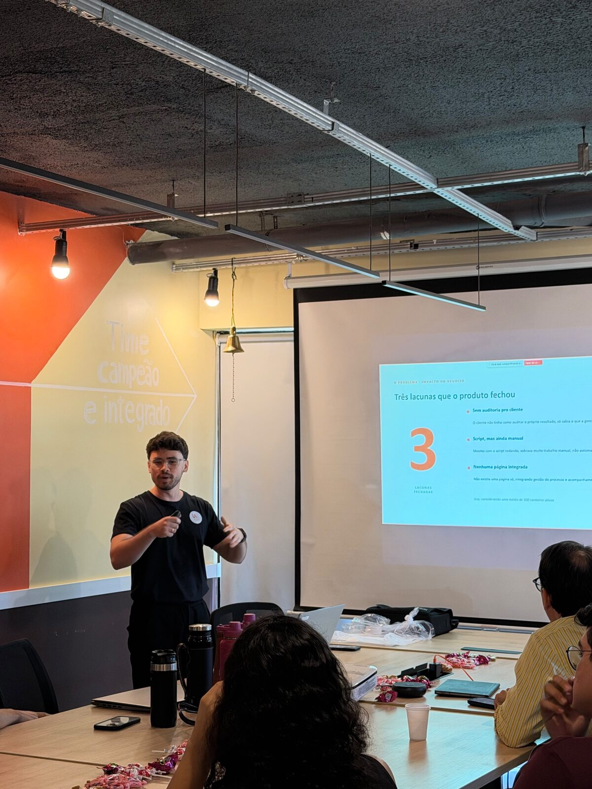
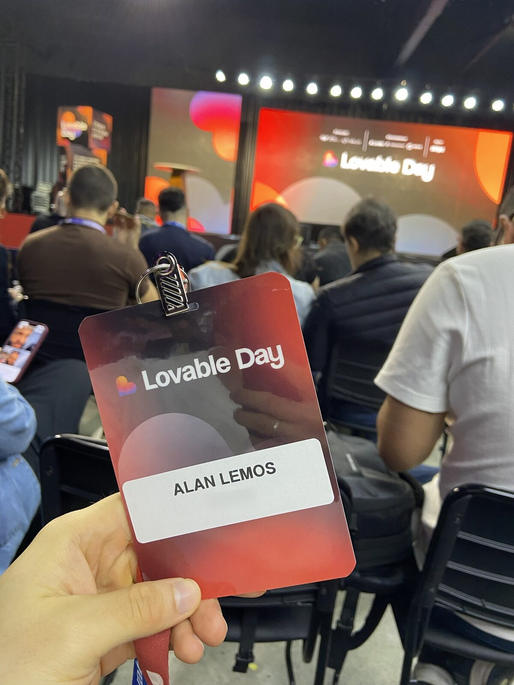

Fala, pessoal! Na sexta-feira, dia 16 de outubro, eu vivi uma experiência incrível no Lovable Day, em São Paulo. Mas essa história não começou lá, começou um pouco antes, quando a empresa onde trabalho promoveu uma competição interna de projetos de inteligência artificial.
Eu e um colega fomos nomeados como melhores projetos, e esse reconhecimento nos rendeu a oportunidade de participar desse evento como premiação.


O que mais me chamou atenção no Lovable Day foi perceber como a empresa está atenta às tendências do mercado de IA, incentivando competições internas que estimulam a inovação e o aprendizado. Além disso, a organização do evento foi excelente, proporcionando um ambiente rico para conectar com outros profissionais e trocar experiências sobre o futuro da inteligência artificial.
O que eu trouxe de lá
Voltei com o caderno cheio. Separei aqui os aprendizados que acho que servem para qualquer pessoa ou empresa que está começando a usar IA no dia a dia.
01Adotar IA é uma jornada, não um botão
As empresas amadurecem com IA em etapas. Primeiro surgem os "champions", pessoas que se empolgam, testam e puxam o resto do time. Depois, o conhecimento começa a ser compartilhado e vira prática coletiva. No estágio mais avançado, a própria IA passa a sugerir melhorias. E implantar bem segue um caminho claro: diagnosticar, quantificar, implantar e garantir que funcione, refazendo o mapa sempre que o caminho mostrar algo novo.
02Comece pelo que mais pesa no dia a dia
A pergunta "qual plataforma construir?" tem uma resposta prática: olhe para as ferramentas em que a empresa mais gasta e para as informações que alguém repete todos os dias. É ali que interfaces personalizadas, agentes de IA e automações, conectados aos sistemas que você já usa, dão retorno mais rápido.
03Dá para construir falando
Uma dica que me marcou: fechar os olhos e descrever em voz alta o site que você imagina, usando uma ferramenta de ditado por voz como o Wispr Flow. A ideia sai mais completa do que quando a gente tenta escrever o pedido perfeito.
04Design continua sendo diferencial
Com tanta gente criando produtos com IA, é o design que diferencia e cria apego. Não basta funcionar: vale buscar um design gostoso de usar.
05Criar ficou rápido. Publicar com segurança, não.
Numa roda de conversa, uma empresa da área da saúde resumiu bem o desafio: três dias para criar um produto e três meses para colocá-lo em produção, por causa da segurança. Não à toa, já existem verificações automáticas de segurança pensadas para quem cria com IA, do escaneamento básico ao teste de invasão.
06Depois de criar, vem crescer
O trabalho não termina na construção. A IA também ajuda a aparecer nas buscas, tanto no Google quanto nas respostas dos assistentes de IA, a apoiar campanhas de anúncios, a produzir textos e carrosséis para as redes e até a gerar vídeos com avatares. Outro passo é transformar a sua plataforma em um MCP, para que assistentes de IA consigam usá-la diretamente.
07Tendências para ficar de olho
- Hackathons como forma de inovar dentro das empresas, como a competição que me levou até lá.
- A provocação de que os sites, como conhecemos hoje, vão perder espaço para conversas com IA.
- Produtos que sugerem o próximo passo, em vez de esperar o usuário pedir.
- O "segundo cérebro": suas informações organizadas em pastas e consultadas por um agente de IA. Quanto melhor o contexto que você dá, melhor a ajuda que recebe.
Fica o agradecimento à equipe pela oportunidade e a empolgação para aplicar na prática tudo que vi.